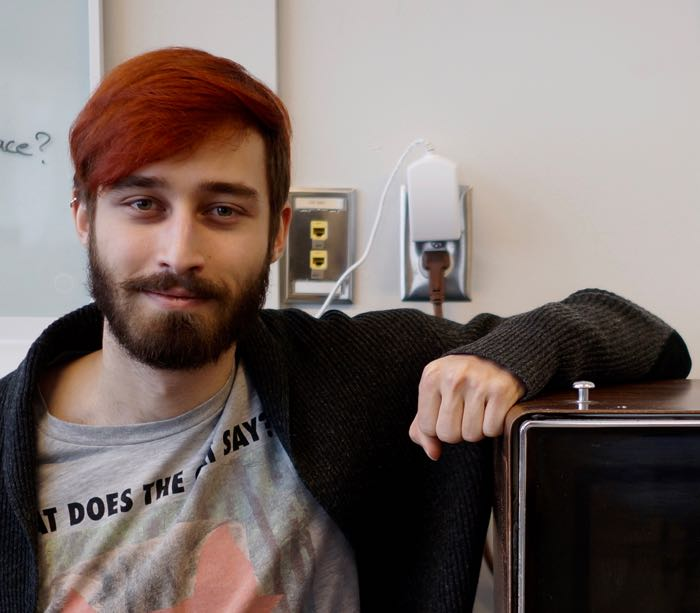
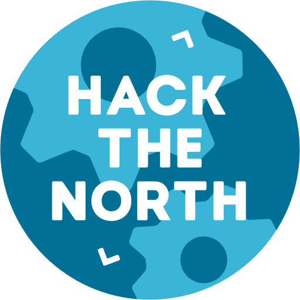

Valentin Tsatskin
About me
 I'm a student studying Systems Design Engineering at the University of Waterloo.
I am interested in Typography, Data Analysis and Display, Web Development, Software Engineering, Machine Learning and Intelligent Systems Design, Digital Rights, and Privacy.
You may contact me at val@valtsatskin.com. I'm also reachable by phone, availible on request. If you've collected enough metadata on me, you might as well just come find me.
Table of Contents
Work Experience
-
Machine Learning Research Co-op
Architech, Toronto, Sep–Dec 2015 -
Software Engineering Intern
Indiegogo, San Francisco, Jan–Apr 2015 -
User Experience Designer
Mozilla, San Francisco, Jan–Aug 2014 -
Gesture Controls Software Developer
Thalmic Labs, Waterloo, May–Aug 2013 -
Software Developer
Desire2Learn, Kitchener, Sep–Dec 2012 -
Ruby on Rails Web Developer
Desire2Learn, Toronto, Jan-Apr 2012
For more detail on selected positions, please see my PDF resume.
UX Designs
Firefox Network Error Design Specifications
A proposed redesign for Firefox's Network Error pages. Most of the changes did not get implemeneted, however I've created a writeup outlining the design. Unfortunately there's a bug in the build script for creating these docs which causes the correct fonts not to be included.
Handling Captive Portals in Firefox
This was an attempt at fixing the frustrating experience of using a public wifi and having to painstakenly log into it. You can check out the design docs on GitHub.
Firefox for Android New Tab Experimentation
We invisioned that switching tabs should be easy enough you can do it one-handed. You can find the designs on GitHub.
You can also try an interactive web demo which conveys the interaction design details. We also built an Android app demo if you know how to sideload apps.
Hackathons
I both participate in and organize hackathons. A Hackathon is “an event, typically lasting several days, in which a large number of people meet to engage in collaborative computer programming”—New Oxford American Dictionary Most of the time I will have something worthwhile to show for. A curated list of such times is provided below.
Hack the North
I helped co-found Canada's largest hackathon.  I was involved in the first two itterations which occured in 2014 and 2015. It attracted 1000+ hackers from 100 schools in 10 countries.
My major involvement was leading the website team. I also happened to MC both times and I'm not really sure why anyone thought I would do a good job at that.
NavajoChat
I created a proof of concept Google Chrome extension to encrypt transmission of Facebook messages. The messages are not stored in plain text on the server and thus can only be read by the intended audiences. You can watch a demo video on YouTube.
For the curious, it uses OpenGPG for encryption. This isn't a serious attempt at securing your messages and there's probably plenty of holes. The code is open sourced on GitHub.
Lunch Roulette
We created an android app to pair you up with strangers to have lunches with. A silly promotional video is on YouTube.
I worked on the interface design. You can check out the design process in our slide deck (PDF). This occured at the inaugral Hacktech in 2014.
SurroundSound
My teammates and I tried to create a solution for delivering music most people at a social event would like. We attempt to provide a curated YouTube playlist for a DJ based on attendee's music preferences. I think it worked once. The code is open-sourced on GitHub. This occured at the inaugral MHacks in 2012.
Talks
Improving Firefox Network Error Experiences
I discuss redesigning the experience of dealing with network related errors in Firefox. The goal: Less frustration, more browsing.
▶ Watch on Air Mozilla or check out the slides.
Version controlled, open source design documents
A guided tour through my design methodology which introduces version control and open source thinking to User Experience design.
▶ Watch on Air Mozilla or check out the slides.